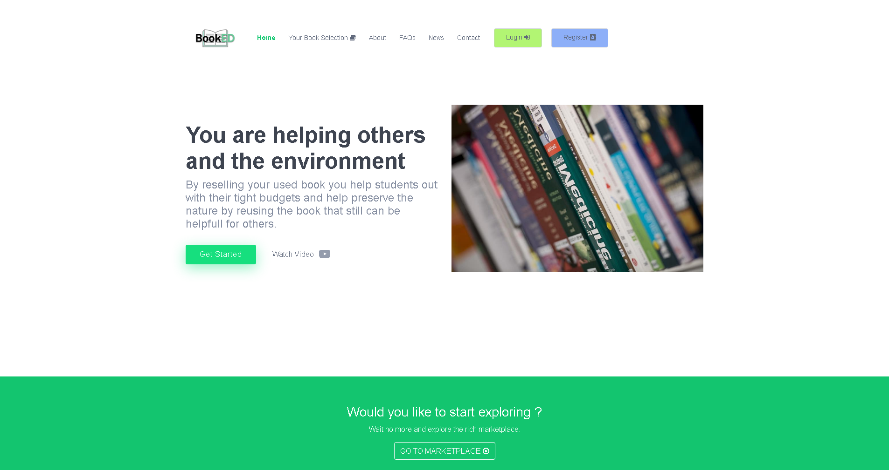

Book Search System
BookED is definitely one of my biggest projects, I have used Django to produce the webpage and API while
flutter fetches the data from it and display on the mobile
The idea for this project was simple, all post secondary students know that educational books can be quite
expansive a lot of times therefore we prefer to buy used ones.
It features a special filter that the student can use to select only books suitable for him/her it uses ajax and
the filter framework from Django to make it possible.
This website is still in production but it promises a lot, I definitely plan to expand and make a giant student
hub in the future !
Technologies:
- - Python
- - Django + Django REST Framework
- - Flutter
- - Postgres
- - AWS (S3 & RDS)
- - News API